2026년 5번째 추천도서 · 최신
텍스트에서 스크린으로
시간을 건너온 영원의 질문
영화로 다시 태어난 고전 열다섯 편. 책과 영화를 나란히 두고 ‘내가 주인공이었다면 어떤 선택을 했을까’를 묻습니다.
이 회차의 책 15권
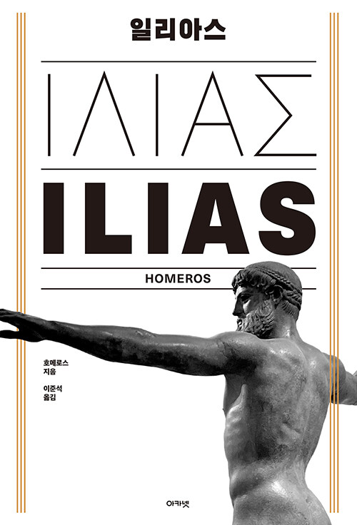
일리아스호메로스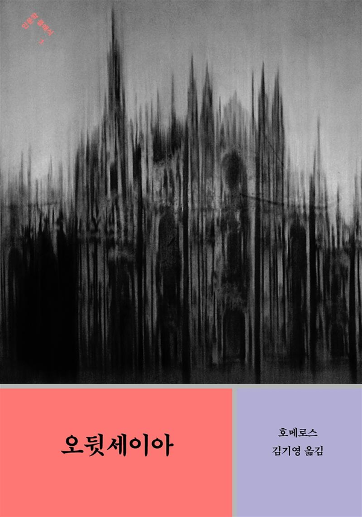
오뒷세이아호메로스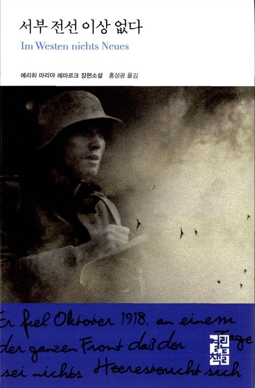
서부 전선 이상 없다에리히 마리아 레마르크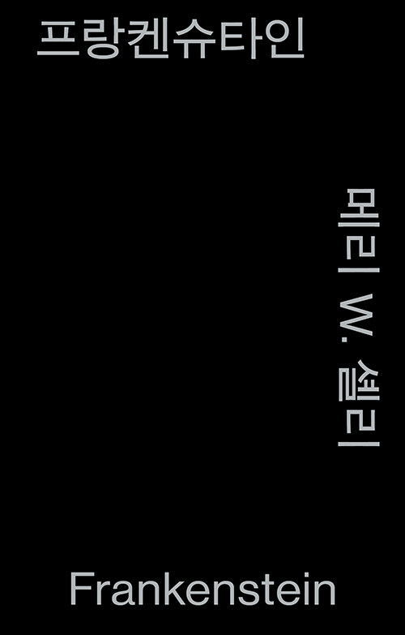
프랑켄슈타인메리 셸리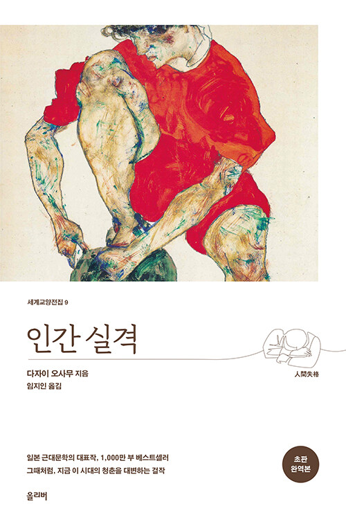
인간 실격다자이 오사무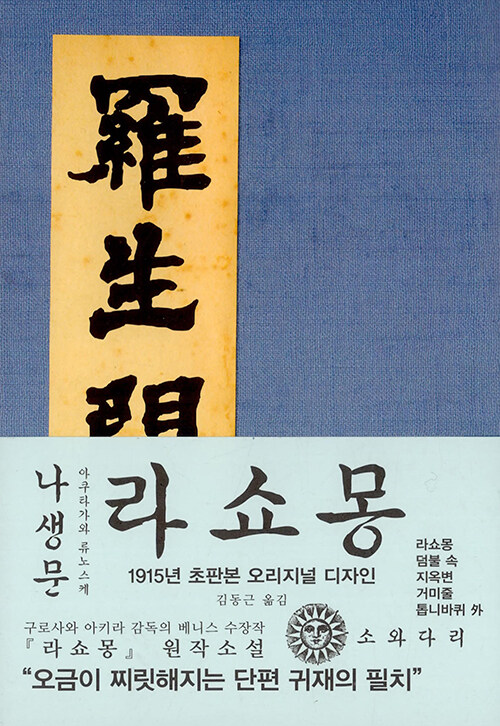
나생문아쿠타가와 류노스케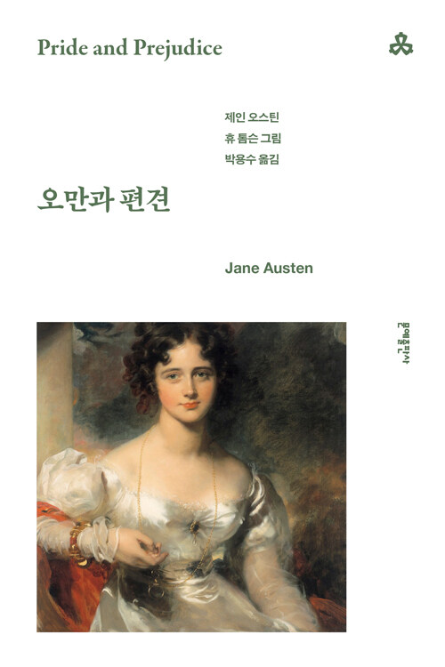
오만과 편견제인 오스틴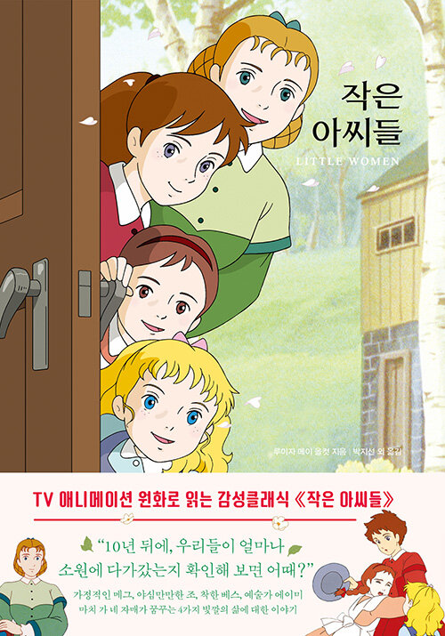
작은 아씨들루이자 메이 올컷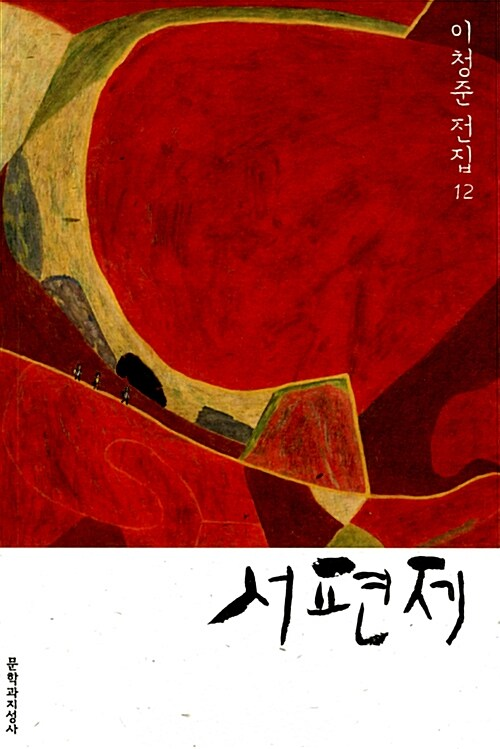
서편제이청준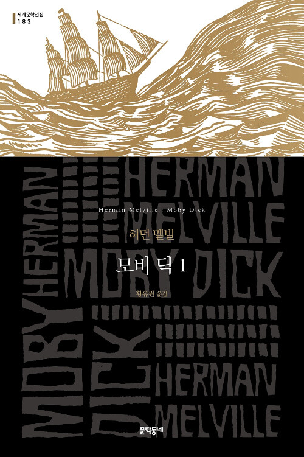
모비 딕허먼 멜빌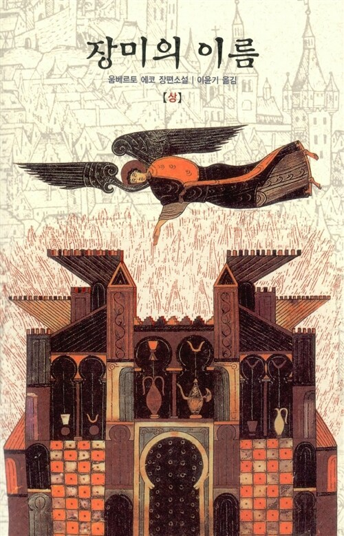
장미의 이름움베르토 에코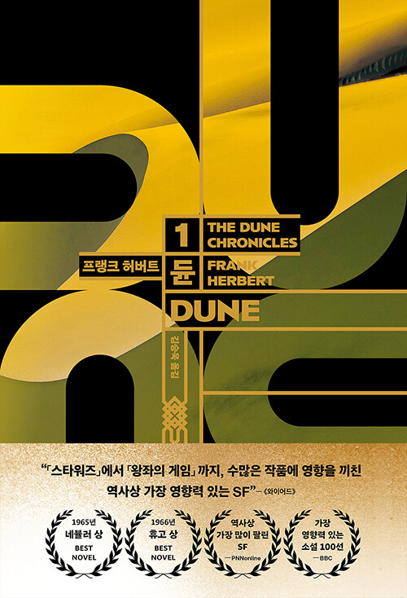
듄프랭크 허버트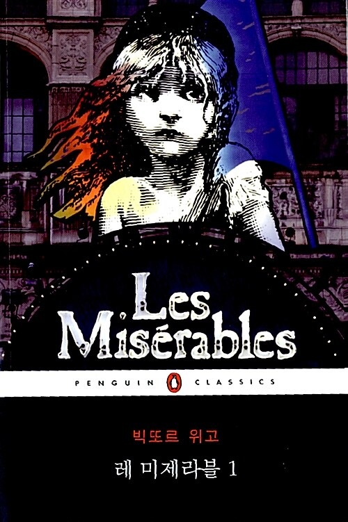
레 미제라블빅토르 위고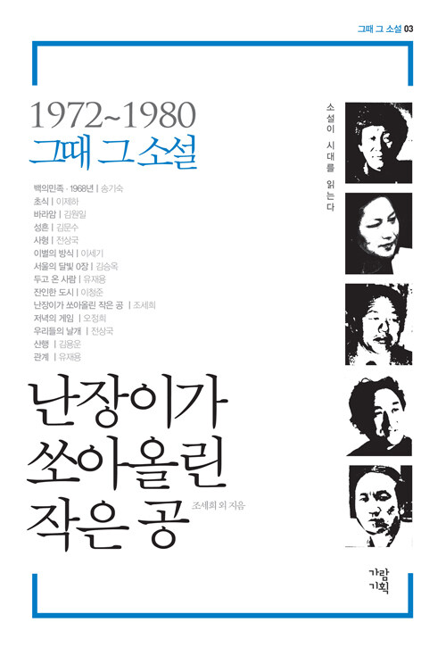
난장이가 쏘아올린 작은 공조세희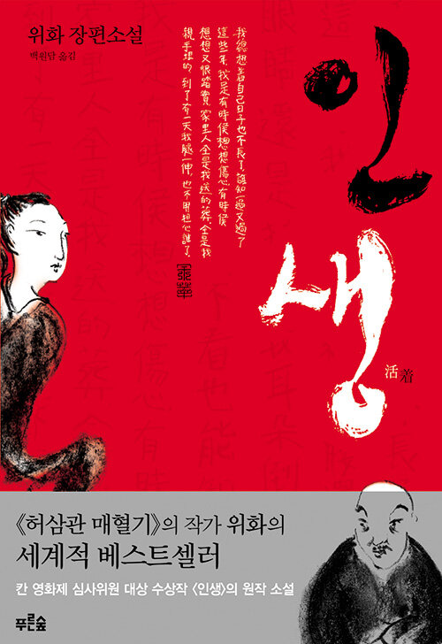
인생위화주제별 전체 목록 보기
01 · 전쟁, 그리고 집으로 가는 길
- 일리아스 호메로스 영화 〈트로이〉 2004 · 볼프강 페터젠
- 오뒷세이아 호메로스 영화 〈오디세이〉 2026 · 크리스토퍼 놀란
- 서부 전선 이상 없다 에리히 마리아 레마르크 영화 〈서부 전선 이상 없다〉 1930 · 2022
02 · 괴물과 인간, 그 경계에서
- 프랑켄슈타인 메리 셸리 영화 〈프랑켄슈타인〉 2025 · 기예르모 델 토로
- 인간 실격 다자이 오사무 영화 〈인간 실격〉 2010 · 아라토 겐지로
- 나생문 아쿠타가와 류노스케 영화 〈라쇼몽〉 1950 · 구로사와 아키라
03 · 사랑과 가족, 나의 자리
- 오만과 편견 제인 오스틴 영화 〈오만과 편견〉 2005 · 조 라이트
- 작은 아씨들 루이자 메이 올컷 영화 〈작은 아씨들〉 2019 · 그레타 거윅
- 서편제 이청준 영화 〈서편제〉 1993 · 임권택
04 · 집착과 권력, 거대한 세계
- 모비 딕 허먼 멜빌 영화 〈모비 딕〉 1956 · 존 휴스턴
- 장미의 이름 움베르토 에코 영화 〈장미의 이름〉 1986 · 장자크 아노
- 듄 프랭크 허버트 영화 〈듄〉 2021 · 〈듄: 파트 2〉 2024 · 드니 빌뇌브
05 · 시대를 견디는 사람들
- 레 미제라블 빅토르 위고 영화 〈레 미제라블〉 2012 · 톰 후퍼
- 난장이가 쏘아올린 작은 공 조세희 영화 〈난장이가 쏘아올린 작은 공〉 1981 · 이원세
- 인생 위화 영화 〈인생〉 1994 · 장이머우
 천문학자는 별을 보지 않는다
천문학자는 별을 보지 않는다 나는 어쩌다 명왕성을 죽였나
나는 어쩌다 명왕성을 죽였나 우주비행사의 지구생활 안내서
우주비행사의 지구생활 안내서 아르테미스
아르테미스 코스모스
코스모스 코스모스: 가능한 세계들
코스모스: 가능한 세계들 짧고 쉽게 쓴 시간의 역사
짧고 쉽게 쓴 시간의 역사 인터스텔라의 과학
인터스텔라의 과학 평행우주
평행우주 엘러건트 유니버스
엘러건트 유니버스 블랙홀 전쟁
블랙홀 전쟁 이명현의 별 헤는 밤
이명현의 별 헤는 밤 프로젝트 헤일메리
프로젝트 헤일메리 콘택트
콘택트 삼체 1
삼체 1 2001 스페이스 오디세이
2001 스페이스 오디세이 창백한 푸른 점
창백한 푸른 점 우주에서 가장 작은 빛
우주에서 가장 작은 빛 세상을 보는 눈, 융합 지성사
세상을 보는 눈, 융합 지성사 우리가 빛의 속도로 갈 수 없다면
우리가 빛의 속도로 갈 수 없다면